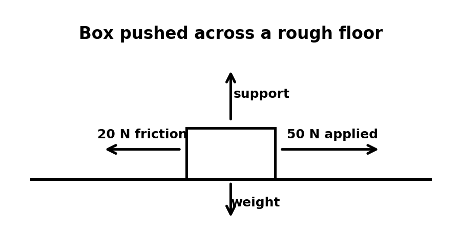
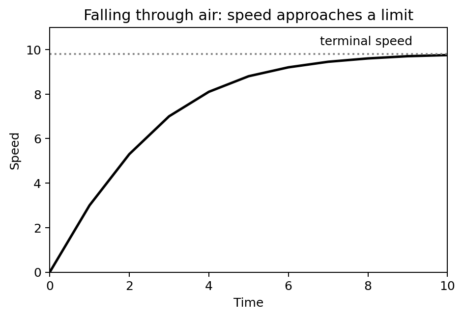
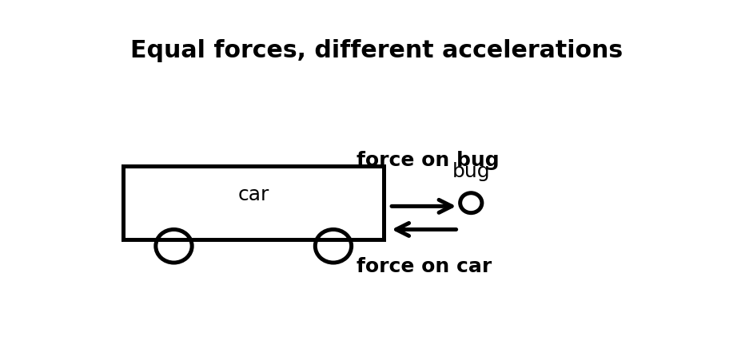
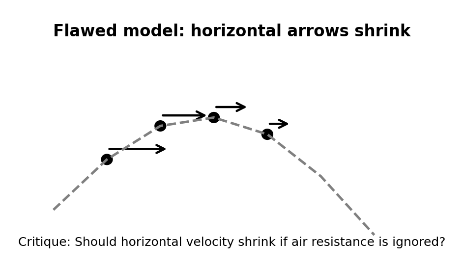
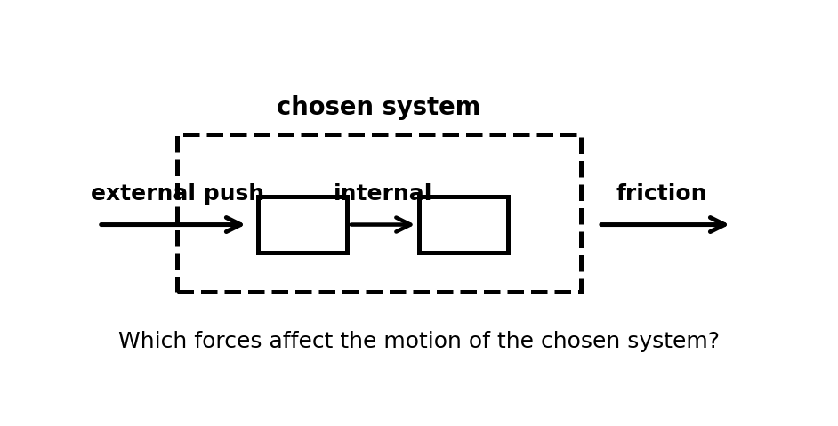

<!doctype html>
<html lang="en">
<head>
<meta charset="utf-8">
<meta name="viewport" content="width=device-width, initial-scale=1">
<title>Unit 3 Assessment Plan</title>
<script>
MathJax = { tex: { inlineMath: [['$','$']], displayMath: [['$$','$$']] } };
</script>
<script async src="https://cdn.jsdelivr.net/npm/mathjax@3/es5/tex-mml-chtml.js"></script>
<link rel="stylesheet" href="../../css/styles.css">
<link rel="stylesheet" href="../../css/assessment.css">
</head>
<body>
<div class="container wrapper main-body">
<header class="site-header" style="margin:-2rem -2rem 2rem -2rem;">
  <p class="kicker">Conceptual Physics — Unit 3: Forces and Motion</p>
  <h1>Assessment Plan</h1>
</header>
<p><strong>Unit 3: Forces and Motion</strong></p>
<div class="essential-standard"><h2>Essential Standard</h2><p>Students will analyze how forces affect motion by applying Newton’s Second Law, distinguishing mass from weight, explaining friction and air resistance, comparing free fall and nonfree fall, identifying action-reaction force pairs, and modeling projectile motion using horizontal and vertical components.</p></div>
<div class="outline-card"><div class="outline-card-title">Unit 3 Formula / Symbol Limit</div><p>This unit remains conceptual before computational. The following formulas and symbolic relationships are enough for the entire unit.</p><ol><li>Newton’s Second Law: $F_{net}=ma$</li><li>Acceleration from net force and mass: $a=\frac{F_{net}}{m}$</li><li>Mass from force and acceleration: $m=\frac{F_{net}}{a}$</li><li>Weight near Earth: $W=mg$</li><li>Net force with friction in one dimension: $F_{net}=F_{applied}-F_f$</li><li>Falling with air resistance: $F_{net}=W-F_{air}$</li><li>Horizontal projectile motion: $x=v_xt$</li><li>Vertical drop from rest: $y=\frac{1}{2}gt^2$</li></ol><p>No more than these eight formulas/symbolic relationships should be required for Unit 3 assessments.</p></div>
<h2>Learning Ladder</h2>
<table class="ladder-table"><tbody><tr><th>Rung</th><th>I Can Statement</th><th>Science Practice</th><th>DOK</th><th>Level</th></tr><tr class="dok4"><td>8</td><td>I can design, defend, or critique a complete force-and-motion model for an unfamiliar real-world situation using force diagrams, Newton’s laws, motion evidence, and formulas.</td><td>Construct Explanations / Argue from Evidence</td><td>DOK 4</td><td>Above</td></tr><tr class="dok4"><td>7</td><td>I can compare competing explanations of a force, friction, falling, interaction, or projectile scenario and justify which explanation better fits the evidence.</td><td>Analyze and Evaluate Models</td><td>DOK 4</td><td>Above</td></tr><tr class="dok3"><td>6</td><td>I can connect force diagrams, motion descriptions, data tables, and formulas to explain how forces change motion.</td><td>Use Models / Explain Phenomena</td><td>DOK 3</td><td>Essential</td></tr><tr class="dok3"><td>5</td><td>I can identify and correct misconceptions about Newton’s Second Law, friction, mass and weight, air resistance, Newton’s Third Law, or projectile motion.</td><td>Critique Reasoning</td><td>DOK 3</td><td>Essential</td></tr><tr class="dok2"><td>4</td><td>I can calculate force, mass, acceleration, weight, net force with friction, or basic projectile quantities in simple situations and interpret the result.</td><td>Use Mathematical Thinking</td><td>DOK 2</td><td>Essential</td></tr><tr class="dok2"><td>3</td><td>I can interpret force diagrams, interaction diagrams, free-fall diagrams, and projectile-motion models.</td><td>Develop and Use Models</td><td>DOK 2</td><td>Essential</td></tr><tr class="dok1"><td>2</td><td>I can define and recognize key terms such as net force, acceleration, mass, weight, friction, air resistance, terminal speed, interaction, and projectile.</td><td>Identify Patterns / Use Vocabulary</td><td>DOK 1</td><td>Essential</td></tr><tr class="dok1"><td>1</td><td>I can recognize whether a situation involves speeding up, slowing down, balanced force, unbalanced force, falling motion, or an interaction between objects.</td><td>Observe and Classify</td><td>DOK 1</td><td>Essential</td></tr></tbody></table>
<div class="dok-bar">DOK 1 — Rungs 1–2</div>
<div class="dok-method-card"><p><strong>Format:</strong> 3–5 minute warm-up, quick check, image prompt, vocabulary check, mini-whiteboard response, card sort, or exit ticket</p><p><strong>Purpose:</strong> Check whether students can recognize basic force-and-motion vocabulary, classify simple situations, and distinguish force, mass, weight, friction, air resistance, interactions, and projectile motion.</p><h3>Assessment Ideas</h3><div class="assessment-ideas"><ol><li>Force and Acceleration Snapshot Check <span class="timing-label">Can Be Assessed After Unit 3, Section 3.1</span> — Students view objects with force arrows and identify whether the motion should change.</li><li>Mass, Weight, or Force? <span class="timing-label">Can Be Assessed After Unit 3, Section 3.2</span> — Students classify short statements as mass, weight, net force, friction, or support force.</li><li>Free Fall or Nonfree Fall? <span class="timing-label">Can Be Assessed After Unit 3, Section 3.3</span> — Students classify falling situations and give one reason for each.</li><li>Action-Reaction Pair Identification <span class="timing-label">Can Be Assessed After Unit 3, Section 3.4</span> — Students identify the two objects involved in several interactions and name the force pair.</li></ol></div><h3>What this tells the teacher:</h3><div class="what-tells"><p>Students who struggle here need more direct support with vocabulary, identifying systems, distinguishing mass from weight, and recognizing that forces come from interactions.</p></div></div>
<div class="dok-bar">DOK 2 — Rungs 3–4</div>
<div class="dok-method-card"><p><strong>Format:</strong> Exit ticket, graph or diagram interpretation, short calculation, data-table task, partner check, whiteboard response, or force-model task</p><p><strong>Purpose:</strong> Check whether students can apply Newton’s Second Law, interpret force diagrams, calculate simple quantities, and connect force models to motion.</p><h3>Assessment Ideas</h3><div class="assessment-ideas"><ol><li>Newton’s Second Law Data Table <span class="timing-label">Can Be Assessed After Unit 3, Section 3.1</span> — Students use a force-mass-acceleration table to calculate a missing value and describe the pattern.</li><li>Friction and Net Force Diagram Task <span class="timing-label">Can Be Assessed After Unit 3, Section 3.2</span> — Students interpret a box-pushing diagram with applied force and friction, determine net force, and describe acceleration.</li><li>Falling With Air Resistance Model <span class="timing-label">Can Be Assessed After Unit 3, Section 3.3</span> — Students compare force diagrams for free fall, falling with air resistance, and terminal speed.</li><li>Projectile Component Match-Up <span class="timing-label">Can Be Assessed After Unit 3, Section 3.5</span> — Students match projectile diagrams to descriptions of horizontal velocity, vertical acceleration, and path shape.</li></ol></div><h3>What this tells the teacher:</h3><div class="what-tells"><p>Errors reveal whether students are confusing force with motion, mass with weight, action-reaction pairs with balanced forces, or horizontal projectile motion with vertical falling motion.</p></div></div>
<div class="dok-bar">DOK 3 — Rungs 5–6</div>
<div class="dok-method-card"><p><strong>Format:</strong> Constructed response, misconception analysis, CER, ranking task, diagram critique, graph explanation, gallery walk, or group whiteboard defense</p><p><strong>Purpose:</strong> Check whether students can reason strategically, explain cause and effect, connect multiple representations, and correct common force-and-motion misconceptions.</p><h3>Assessment Ideas</h3><div class="assessment-ideas"><ol><li>Force Does Not Mean Motion Misconception <span class="timing-label">Can Be Assessed After Unit 3, Section 3.1</span> — Students revise the claim that a moving object must have a net force in its direction of motion.</li><li>Mass vs. Weight Explanation Task <span class="timing-label">Can Be Assessed After Unit 3, Section 3.2</span> — Students explain why the same object has the same mass on Earth and the Moon but different weight.</li><li>Terminal Speed Misconception Analysis <span class="timing-label">Can Be Assessed After Unit 3, Section 3.3</span> — Students critique the claim that gravity stops acting at terminal speed.</li><li>Third Law Interaction Explanation <span class="timing-label">Can Be Assessed After Unit 3, Section 3.4</span> — Students explain equal interaction forces and different accelerations in a collision.</li></ol></div><h3>What this tells the teacher:</h3><div class="what-tells"><p>This level shows whether students understand the physics behind the formulas and diagrams and can explain misconceptions clearly.</p></div></div>
<div class="dok-bar">DOK 4 — Rungs 7–8</div>
<div class="dok-method-card"><p><strong>Format:</strong> Performance task, extended response, investigation reflection, modeling task, critique task, or strategy defense</p><p><strong>Purpose:</strong> Check whether students can synthesize force diagrams, interaction pairs, motion data, formulas, projectile models, and conceptual explanations in unfamiliar real-world situations.</p><h3>Assessment Ideas</h3><div class="assessment-ideas"><ol><li>Build a Force-and-Motion Model from Evidence <span class="timing-label">Can Be Assessed After Unit 3, Section 3.1 or 3.2</span> — Students receive force data, mass data, or a motion description and build a model explaining acceleration.</li><li>Critique a Falling-Object Explanation <span class="timing-label">Can Be Assessed After Unit 3, Section 3.3</span> — Students evaluate two explanations for a falling object with air resistance and defend the better one.</li><li>Interaction and System Defense <span class="timing-label">Can Be Assessed After Unit 3, Section 3.4</span> — Students define a system, identify internal and external forces, and explain whether the system accelerates.</li><li>Projectile Motion Model Critique <span class="timing-label">Can Be Assessed After Unit 3, Section 3.5</span> — Students critique a flawed projectile diagram, revise the horizontal and vertical components, and defend the corrected model.</li></ol></div><h3>What this tells the teacher:</h3><div class="what-tells"><p>DOK 4 tasks show whether students can transfer force-and-motion understanding to unfamiliar situations and defend their reasoning using Newton’s laws, diagrams, formulas, systems, and evidence.</p></div></div>
<h2>Summative Assessment Plan</h2>
<div class="summative-card"><p>Assessment is designed for a 45-minute time limit.</p><p>The Unit 3 summative will be created as one consolidated HTML file with six versions of the assessment, an answer key, and a standardized two-page answer sheet. Test questions will be printed without workspaces so students use the answer sheet for responses and formula work.</p><p>Summative Assessment</p><h3>Assessment File Structure</h3><p>The summative file will include six versions of the assessment. Each version should assess the same Unit 3 standards, DOK levels, vocabulary expectations, misconception checks, diagram skills, force-modeling skills, projectile-modeling skills, and formula skills, but with varied numbers, contexts, diagrams, wording, and answer order.</p><h3>Recommended Student Assessment Structure</h3><p><strong>Questions 1–16: Multiple Choice</strong> — Students answer on the standardized bubble sheet.</p><ul><li><strong>5 Questions DOK 1</strong> — Vocabulary, basic recognition, force/motion classification, mass versus weight, friction, free fall, action-reaction pairs, and projectile identification.</li><li><strong>6 Questions DOK 2</strong> — Interpreting force diagrams, applying Newton’s Second Law, calculating weight, finding net force with friction, interpreting falling-force diagrams, and recognizing projectile components.</li><li><strong>4 Questions DOK 3</strong> — Analyzing misconceptions, connecting force diagrams to acceleration, interpreting terminal speed, comparing interactions, and choosing the best explanation.</li><li><strong>1 Question DOK 4</strong> — Evaluating a model, critique, system-based reasoning, investigation-based reasoning, or choosing the best evidence-supported explanation.</li></ul><p><strong>Questions 17–20: Free Response / Formula and Reasoning Questions</strong> — These are the last four questions of each assessment version. Students complete these on the back side of the standardized answer sheet in four numbered quadrants.</p><ul><li><strong>Question 17:</strong> Formula / Newton’s Second Law reasoning using $F_{net}=ma$, $a=\frac{F_{net}}{m}$, or $m=\frac{F_{net}}{a}$.</li><li><strong>Question 18:</strong> Formula / mass-weight, friction, or falling-force reasoning using $W=mg$, $F_{net}=F_{applied}-F_f$, or $F_{net}=W-F_{air}$.</li><li><strong>Question 19:</strong> Force diagram, action-reaction pair, system model, or Newton’s Third Law explanation.</li><li><strong>Question 20:</strong> Projectile-motion model, context-rich application, critique, or short CER-style reasoning task.</li></ul><h3>Answer Key and Answer Sheet Pages</h3><p>After the six assessment versions, the summative file will include an answer key.</p><p>The final two pages of the file will be a standardized answer sheet:</p><ul><li><strong>Answer Sheet Page 1:</strong> Assessment Name, Student Name, bubble area for selecting version number, and bubbles for multiple-choice questions 1–16.</li><li><strong>Answer Sheet Page 2:</strong> Prints on the back of Page 1 and is divided into four quadrants labeled 17, 18, 19, and 20 for the free-response formula and reasoning questions.</li></ul><h3>Question-Type Balance</h3><ul><li>Standard wording: about 5 questions</li><li>Inverted wording: about 5 questions</li><li>Context-rich wording: about 6 questions</li><li>Vocabulary / diagram / model-based wording: about 4 questions</li></ul><h3>Assessment Bank Note</h3><p>The assessment bank should remain open-response, short-answer, diagram-based, graph-based, force-model-based, projectile-model-based, and explanation-based. Bank items should not be written as multiple-choice questions. Selected bank items can later be adapted into multiple-choice summative questions with misconception-based distractors for questions 1–16.</p><h3>Scoring Recommendation</h3><p>Suggested weighting: Multiple Choice: 16 points; Free Response: 16 points total, 4 points per quadrant; Total: 32 points.</p><ul><li><strong>4:</strong> Accurate answer, clear reasoning, correct vocabulary, correct formula use or model, and complete explanation.</li><li><strong>3:</strong> Mostly correct with minor error or missing detail.</li><li><strong>2:</strong> Partial understanding shown, but reasoning, diagram, graph, or calculation is incomplete.</li><li><strong>1:</strong> Minimal correct physics shown.</li><li><strong>0:</strong> Blank, unrelated, or no meaningful evidence of understanding.</li></ul></div>
<h2>Holistic Rubric</h2>
<div class="rubric-card"><h3 class="rubric-level">A — Highly Proficient</h3><p>The student demonstrates a strong and flexible understanding of Unit 3 concepts. Work is accurate, well-organized, and supported by clear reasoning. The student can explain Newton’s Second Law, friction, mass, weight, free fall, nonfree fall, Newton’s Third Law, systems, and projectile motion in familiar and unfamiliar situations. The student can interpret force diagrams, action-reaction pairs, falling-force models, and projectile models, use formulas appropriately, critique models, and defend claims using evidence.</p></div>
<div class="rubric-card"><h3 class="rubric-level">B — Proficient</h3><p>The student demonstrates solid understanding of the essential Unit 3 concepts. Most work is accurate, and the student can complete standard and moderately complex tasks independently. The student can apply Newton’s Second Law, calculate force or acceleration, distinguish mass from weight, explain friction and air resistance, identify action-reaction pairs, and describe projectile components. Explanations are generally clear, though they may lack some precision or depth.</p></div>
<div class="rubric-card"><h3 class="rubric-level">C — Developing Proficiency</h3><p>The student demonstrates partial but passable understanding of Unit 3 concepts. The student can complete many routine tasks but may need support with net force, acceleration direction, friction, mass versus weight, terminal speed, action-reaction pairs, system definitions, or projectile-motion components. Work may contain errors or incomplete explanations, but there is enough evidence that the student understands the main ideas.</p></div>
<div class="rubric-card"><h3 class="rubric-level">Not Yet — Insufficient Evidence</h3><p>The student does not yet demonstrate sufficient understanding of the essential Unit 3 concepts. Work shows major errors, missing reasoning, confusion between force and motion, confusion between mass and weight, incorrect use of Newton’s Second or Third Law, weak diagram interpretation, incorrect formula use, or weak connections between models and evidence. The student may need reteaching, additional practice, or reassessment to demonstrate proficiency.</p></div>
<div class="page-break"></div>
<h1>Strictly Assessment Bank</h1>
<div class="bank-intro"><p>This bank is organized by DOK so future formative versions and summative versions can be assembled quickly. The bank should remain open-response, short-answer, diagram-based, graph-based, force-model-based, projectile-model-based, and explanation-based. Bank questions should not be multiple choice.</p><p><strong>Figure naming convention for future assessment files:</strong> use <code>unit3-dok#-#-problem#.png</code> or descriptive names in the <code>figures/</code> folder.</p></div>
<div class="dok-bar">DOK 1 — Recognition / Vocabulary / Basic Features</div>
<section class="assessment-card" id="assessment-bank-dok1-001"><div class="problem-number">Assessment Bank DOK 1.001<span class="problem-meta">Section 3.1 | DOK 1</span></div><p>Match each term to its definition.</p><p><strong>Terms:</strong> 1. Net force 2. Friction 3. Mass 4. Weight 5. Action-reaction pair</p><ol type="A"><li>The force on an object due to gravity</li><li>A pair of equal and opposite forces acting on different objects</li><li>The vector sum of all forces acting on an object</li><li>A measure of inertia or quantity of matter</li><li>A resistive force that opposes motion or attempted motion</li></ol></section>
<section class="assessment-card" id="assessment-bank-dok1-002"><div class="problem-number">Assessment Bank DOK 1.002<span class="problem-meta">Section 3.1 | DOK 1</span></div><p>Which law or idea best matches this statement?</p><p>“The acceleration of an object is directly proportional to the net force and inversely proportional to the mass.”</p></section>
<section class="assessment-card" id="assessment-bank-dok1-003"><div class="problem-number">Assessment Bank DOK 1.003<span class="problem-meta">Section 3.2 | DOK 1</span></div><p>State whether each situation is best described as balanced force, unbalanced force, friction, or air resistance.</p><ol type="a"><li>A book remains still on a table.</li><li>A box slows down after being pushed across carpet.</li><li>A parachute helps a skydiver slow down.</li><li>A cart speeds up when pulled by a rope.</li></ol></section>
<section class="assessment-card" id="assessment-bank-dok1-004"><div class="problem-number">Assessment Bank DOK 1.004<span class="problem-meta">Section 3.2 | DOK 1</span></div><p>Complete the sentence using the best vocabulary term: The force that opposes the attempted sliding of a stationary object is called __________ friction.</p></section>
<section class="assessment-card" id="assessment-bank-dok1-005"><div class="problem-number">Assessment Bank DOK 1.005<span class="problem-meta">Section 3.2 | DOK 1</span></div><p>A person stands on a scale. Which quantity is the scale most directly related to: mass or weight? Explain in one sentence.</p></section>
<section class="assessment-card" id="assessment-bank-dok1-006"><div class="problem-number">Assessment Bank DOK 1.006<span class="problem-meta">Section 3.4 | DOK 1</span></div><p>Identify the action-reaction pair in this interaction: A student pushes on a wall with both hands.</p><div class="figure-block graph-xl"></div></section>
<section class="assessment-card" id="assessment-bank-dok1-007"><div class="problem-number">Assessment Bank DOK 1.007<span class="problem-meta">Section 3.5 | DOK 1</span></div><p>Classify each object as a projectile or not a projectile. Assume air resistance is ignored unless stated otherwise.</p><ol type="a"><li>A soccer ball after it is kicked and moving through the air</li><li>A car driving along a road</li><li>A stone dropped from a bridge</li><li>A paper airplane while still being pushed forward by a student’s hand</li></ol></section>
<section class="assessment-card" id="assessment-bank-dok1-008"><div class="problem-number">Assessment Bank DOK 1.008<span class="problem-meta">Section 3.3 | DOK 1</span></div><p>In your own words, explain the difference between free fall and nonfree fall.</p></section>
<section class="assessment-card" id="assessment-bank-dok1-009"><div class="problem-number">Assessment Bank DOK 1.009<span class="problem-meta">Section 3.1 | DOK 1</span></div><p>For each phrase, write whether it describes force, acceleration, mass, or velocity.</p><ol type="a"><li>How strongly motion changes</li><li>How much matter or inertia an object has</li><li>A push or pull</li><li>Speed in a direction</li></ol></section>
<section class="assessment-card" id="assessment-bank-dok1-010"><div class="problem-number">Assessment Bank DOK 1.010<span class="problem-meta">Section 3.3 | DOK 1</span></div><p>Look at the three falling-object force models. Label each as free fall, falling with air resistance, or terminal speed.</p><div class="figure-block graph-xl"></div></section>
<section class="assessment-card" id="assessment-bank-dok1-011"><div class="problem-number">Assessment Bank DOK 1.011<span class="problem-meta">Section 3.4 | DOK 1</span></div><p>In a collision, Newton’s Third Law forces act on the same object or on different objects? Answer and give one example.</p></section>
<section class="assessment-card" id="assessment-bank-dok1-012"><div class="problem-number">Assessment Bank DOK 1.012<span class="problem-meta">Section 3.5 | DOK 1</span></div><p>Complete the sentence: For a projectile with air resistance ignored, the horizontal velocity is __________ while the vertical velocity __________.</p><div class="figure-block graph-xl"></div></section>
<div class="dok-bar">DOK 2 — Skills / Diagrams / Simple Application</div>
<section class="assessment-card" id="assessment-bank-dok2-001"><div class="problem-number">Assessment Bank DOK 2.001<span class="problem-meta">Section 3.1 | DOK 2</span></div><p>A 4 kg cart has a net force of 20 N acting on it. Determine the cart’s acceleration.</p><div class="figure-block graph-xl"></div></section>
<section class="assessment-card" id="assessment-bank-dok2-002"><div class="problem-number">Assessment Bank DOK 2.002<span class="problem-meta">Section 3.1 | DOK 2</span></div><p>Determine the net force needed to give a 10 kg object an acceleration of $3\text{ m/s}^2$.</p></section>
<section class="assessment-card" id="assessment-bank-dok2-003"><div class="problem-number">Assessment Bank DOK 2.003<span class="problem-meta">Section 3.2 | DOK 2</span></div><p>A student pushes a box with 50 N to the right. Friction acts with 20 N to the left. Determine the net force on the box and describe the direction of acceleration.</p><div class="figure-block graph-xl"></div></section>
<section class="assessment-card" id="assessment-bank-dok2-004"><div class="problem-number">Assessment Bank DOK 2.004<span class="problem-meta">Section 3.2 | DOK 2</span></div><p>A 2 kg object rests near Earth’s surface. Determine its approximate weight using $g pprox 10\text{ m/s}^2$.</p></section>
<section class="assessment-card" id="assessment-bank-dok2-005"><div class="problem-number">Assessment Bank DOK 2.005<span class="problem-meta">Section 3.3 | DOK 2</span></div><p>A falling object has a weight of 40 N downward and air resistance of 15 N upward. Determine the net force on the object and state whether it is still accelerating.</p></section>
<section class="assessment-card" id="assessment-bank-dok2-006"><div class="problem-number">Assessment Bank DOK 2.006<span class="problem-meta">Section 3.2 | DOK 2</span></div><p>Draw and label the forces acting on a box sliding to the right across a rough floor after being pushed. Your diagram should include weight, support force, and friction.</p></section>
<section class="assessment-card" id="assessment-bank-dok2-007"><div class="problem-number">Assessment Bank DOK 2.007<span class="problem-meta">Section 3.4 | DOK 2</span></div><p>A student pushes on a wall with 30 N. Determine the force the wall exerts on the student. Then state the direction of that force.</p><div class="figure-block graph-xl"></div></section>
<section class="assessment-card" id="assessment-bank-dok2-008"><div class="problem-number">Assessment Bank DOK 2.008<span class="problem-meta">Section 3.5 | DOK 2</span></div><p>A ball rolls horizontally off a table with a horizontal speed of $2\text{ m/s}$. Determine how far horizontally it travels in 3 seconds, ignoring air resistance.</p></section>
<section class="assessment-card" id="assessment-bank-dok2-009"><div class="problem-number">Assessment Bank DOK 2.009<span class="problem-meta">Section 3.1 | DOK 2</span></div><p>Cart A and Cart B experience the same net force. Use the diagram to decide which cart has the greater acceleration and explain why.</p><div class="figure-block graph-xl"></div></section>
<section class="assessment-card" id="assessment-bank-dok2-010"><div class="problem-number">Assessment Bank DOK 2.010<span class="problem-meta">Section 3.2 | DOK 2</span></div><p>Use the friction graph to compare static friction and sliding friction. What happens to static friction before the object begins sliding?</p><div class="figure-block graph-xl"></div></section>
<section class="assessment-card" id="assessment-bank-dok2-011"><div class="problem-number">Assessment Bank DOK 2.011<span class="problem-meta">Section 3.3 | DOK 2</span></div><p>For each force model shown, determine whether the net force is downward, zero, or cannot be determined.</p><div class="figure-block graph-xl"></div></section>
<section class="assessment-card" id="assessment-bank-dok2-012"><div class="problem-number">Assessment Bank DOK 2.012<span class="problem-meta">Section 3.5 | DOK 2</span></div><p>A projectile has a horizontal velocity of $6\text{ m/s}$ and is in the air for 2 seconds. Determine the horizontal distance traveled, ignoring air resistance.</p></section>
<div class="dok-bar">DOK 3 — Explanation / Error Analysis / Connections</div>
<section class="assessment-card" id="assessment-bank-dok3-001"><div class="problem-number">Assessment Bank DOK 3.001<span class="problem-meta">Section 3.1 | DOK 3</span></div><p>A student says, “A force is needed to keep an object moving, so a moving object must have a net force in the direction it moves.” Explain the misconception and revise the statement using Newton’s laws.</p></section>
<section class="assessment-card" id="assessment-bank-dok3-002"><div class="problem-number">Assessment Bank DOK 3.002<span class="problem-meta">Section 3.2 | DOK 3</span></div><p>A box is pushed across the floor at constant velocity. Explain what must be true about the applied force and friction force.</p><div class="figure-block graph-xl"></div></section>
<section class="assessment-card" id="assessment-bank-dok3-003"><div class="problem-number">Assessment Bank DOK 3.003<span class="problem-meta">Section 3.1 | DOK 3</span></div><p>A student says, “If an object has more mass, it must accelerate more because it is heavier.” Do you agree? Explain using Newton’s Second Law.</p></section>
<section class="assessment-card" id="assessment-bank-dok3-004"><div class="problem-number">Assessment Bank DOK 3.004<span class="problem-meta">Section 3.3 | DOK 3</span></div><p>A falling object reaches terminal speed. Explain why the object continues moving downward even though its acceleration is zero.</p><div class="figure-block graph-xl"></div></section>
<section class="assessment-card" id="assessment-bank-dok3-005"><div class="problem-number">Assessment Bank DOK 3.005<span class="problem-meta">Section 3.4 | DOK 3</span></div><p>A car and a bug collide. The car exerts a force on the bug, and the bug exerts a force on the car. Explain why the forces are equal in size but the effects on the car and bug are very different.</p><div class="figure-block graph-xl"></div></section>
<section class="assessment-card" id="assessment-bank-dok3-006"><div class="problem-number">Assessment Bank DOK 3.006<span class="problem-meta">Section 3.3 | DOK 3</span></div><p>A student identifies the forces on a falling skydiver as weight downward and air resistance upward. The student says, “The skydiver must be moving upward because air resistance points upward.” Critique the statement and revise it.</p></section>
<section class="assessment-card" id="assessment-bank-dok3-007"><div class="problem-number">Assessment Bank DOK 3.007<span class="problem-meta">Section 3.5 | DOK 3</span></div><p>A ball rolls off a table. Explain why its horizontal velocity can remain constant while its vertical velocity changes.</p><div class="figure-block graph-xl"></div></section>
<section class="assessment-card" id="assessment-bank-dok3-008"><div class="problem-number">Assessment Bank DOK 3.008<span class="problem-meta">Section 3.5 | DOK 3</span></div><p>Compare these two situations. Situation A: A ball is dropped straight down from a table. Situation B: A ball rolls horizontally off the same table at the same instant. Ignoring air resistance, explain why the two balls hit the ground at the same time.</p></section>
<section class="assessment-card" id="assessment-bank-dok3-009"><div class="problem-number">Assessment Bank DOK 3.009<span class="problem-meta">Section 3.2 | DOK 3</span></div><p>Using the Earth-Moon figure, explain why mass does not change but weight does change when an object moves from Earth to the Moon.</p><div class="figure-block graph-xl"></div></section>
<section class="assessment-card" id="assessment-bank-dok3-010"><div class="problem-number">Assessment Bank DOK 3.010<span class="problem-meta">Section 3.1 | DOK 3</span></div><p>A student claims that Cart A and Cart B must have the same acceleration because the same force acts on both. Critique the claim using the diagram.</p><div class="figure-block graph-xl"></div></section>
<section class="assessment-card" id="assessment-bank-dok3-011"><div class="problem-number">Assessment Bank DOK 3.011<span class="problem-meta">Section 3.4 | DOK 3</span></div><p>A student says, “The wall pushes back only after I push it.” Explain why this wording can be misleading when describing a force interaction.</p><div class="figure-block graph-xl"></div></section>
<section class="assessment-card" id="assessment-bank-dok3-012"><div class="problem-number">Assessment Bank DOK 3.012<span class="problem-meta">Section 3.5 | DOK 3</span></div><p>A projectile diagram shows horizontal velocity arrows getting shorter as the object falls. Critique the model and explain what should happen when air resistance is ignored.</p><div class="figure-block graph-xl"></div></section>
<div class="dok-bar">DOK 4 — Modeling / Critique / Transfer</div>
<section class="assessment-card" id="assessment-bank-dok4-001"><div class="problem-number">Assessment Bank DOK 4.001<span class="problem-meta">Section 3.1 | DOK 4</span></div><p>A student collects data from a cart being pulled with different forces and claims, “Force and acceleration are the same thing because they both increase together.”</p><ol type="a"><li>Critique the claim.</li><li>Explain the relationship between force and acceleration.</li><li>Explain how mass affects the relationship.</li><li>Describe what evidence would support your explanation.</li></ol></section>
<section class="assessment-card" id="assessment-bank-dok4-002"><div class="problem-number">Assessment Bank DOK 4.002<span class="problem-meta">Section 3.2 | DOK 4</span></div><p>Design a short investigation that could show the difference between static friction and sliding friction.</p><ol type="a"><li>Materials</li><li>Procedure</li><li>What students should measure or observe</li><li>What pattern would show static friction</li><li>What pattern would show sliding friction</li><li>One likely misconception and how the investigation addresses it</li></ol><div class="figure-block graph-xl"></div></section>
<section class="assessment-card" id="assessment-bank-dok4-003"><div class="problem-number">Assessment Bank DOK 4.003<span class="problem-meta">Section 3.3 | DOK 4</span></div><p>A skydiver jumps from a plane and eventually reaches terminal speed. Create a force-and-motion model for the skydiver that includes the beginning of the fall, how air resistance changes, the forces at terminal speed, the acceleration at terminal speed, and why the skydiver still moves downward.</p><div class="figure-block graph-xl"></div></section>
<section class="assessment-card" id="assessment-bank-dok4-004"><div class="problem-number">Assessment Bank DOK 4.004<span class="problem-meta">Section 3.4 | DOK 4</span></div><p>Two students discuss Newton’s Third Law. Student A says, “Action-reaction forces cancel because they are equal and opposite.” Student B says, “Action-reaction forces are equal and opposite, but they act on different objects, so they do not cancel on one object.” Choose the better explanation, critique the weaker explanation, and support your answer using a real interaction.</p></section>
<section class="assessment-card" id="assessment-bank-dok4-005"><div class="problem-number">Assessment Bank DOK 4.005<span class="problem-meta">Section 3.5 | DOK 4</span></div><p>A student draws a projectile path and labels the horizontal velocity arrows as getting smaller because the object is falling.</p><ol type="a"><li>Critique the model.</li><li>Explain what happens to horizontal velocity when air resistance is ignored.</li><li>Explain what happens to vertical velocity.</li><li>Revise the model in words or with a sketch description.</li></ol><div class="figure-block graph-xl"></div></section>
<section class="assessment-card" id="assessment-bank-dok4-006"><div class="problem-number">Assessment Bank DOK 4.006<span class="problem-meta">Section 3.5 | DOK 4</span></div><p>A soccer player kicks a ball at an upward angle. Another student says, “The ball curves because a forward force keeps pushing it while gravity pulls it down.” Evaluate the explanation, identify the misconception, and write a corrected explanation using inertia, gravity, horizontal motion, and vertical motion.</p></section>
<section class="assessment-card" id="assessment-bank-dok4-007"><div class="problem-number">Assessment Bank DOK 4.007<span class="problem-meta">Section 3.1 | DOK 4</span></div><p>A ramp-and-cart investigation produces motion dots that get farther apart each second. Build a force-and-motion explanation that connects the ramp, net force, acceleration, and the increasing spacing between dots.</p><div class="figure-block graph-xl"></div></section>
<section class="assessment-card" id="assessment-bank-dok4-008"><div class="problem-number">Assessment Bank DOK 4.008<span class="problem-meta">Section 3.4 | DOK 4</span></div><p>Use the system diagram to decide which forces are internal and which are external. Explain which forces can change the motion of the chosen system and why system choice matters.</p><div class="figure-block graph-xl"></div></section>
<section class="assessment-card" id="assessment-bank-dok4-009"><div class="problem-number">Assessment Bank DOK 4.009<span class="problem-meta">Section 3.3 | DOK 4</span></div><p>Two parachutes have the same weight but different surface areas. Design a model that predicts which reaches terminal speed sooner and defend your reasoning using air resistance and net force.</p></section>
<section class="assessment-card" id="assessment-bank-dok4-010"><div class="problem-number">Assessment Bank DOK 4.010<span class="problem-meta">Section 3.2 | DOK 4</span></div><p>A delivery worker pushes a heavy crate across a floor. At first it does not move, then it begins sliding and becomes easier to keep moving. Build an explanation that includes static friction, sliding friction, net force, and acceleration.</p></section>
<section class="assessment-card" id="assessment-bank-dok4-011"><div class="problem-number">Assessment Bank DOK 4.011<span class="problem-meta">Section 3.4 | DOK 4</span></div><p>A small boat pushes water backward with a paddle and moves forward. Explain the interaction pair, define the system as boat plus paddler, and decide whether the water’s force is internal or external to that system.</p></section>
<section class="assessment-card" id="assessment-bank-dok4-012"><div class="problem-number">Assessment Bank DOK 4.012<span class="problem-meta">Section 3.5 | DOK 4</span></div><p>A student uses a projectile model to predict where a ball will land after rolling off a table. Explain what information is needed, what formulas or relationships could be used, and how the horizontal and vertical parts of the motion work together.</p><div class="figure-block graph-xl"></div></section>
</div>
</body>
</html>